Buddy had just found a comfortable hollow beneath the banyan tree. He turned twice, moved a stone with his paw and lowered himself into the exact shape of a quiet evening.
His stick fitted beside him. Shadow had settled across the nearest root, Chikki was investigating an old leaf, and Neet was on his command rock, looking for something to improve.
Buddy closed his eyes before he could be selected.
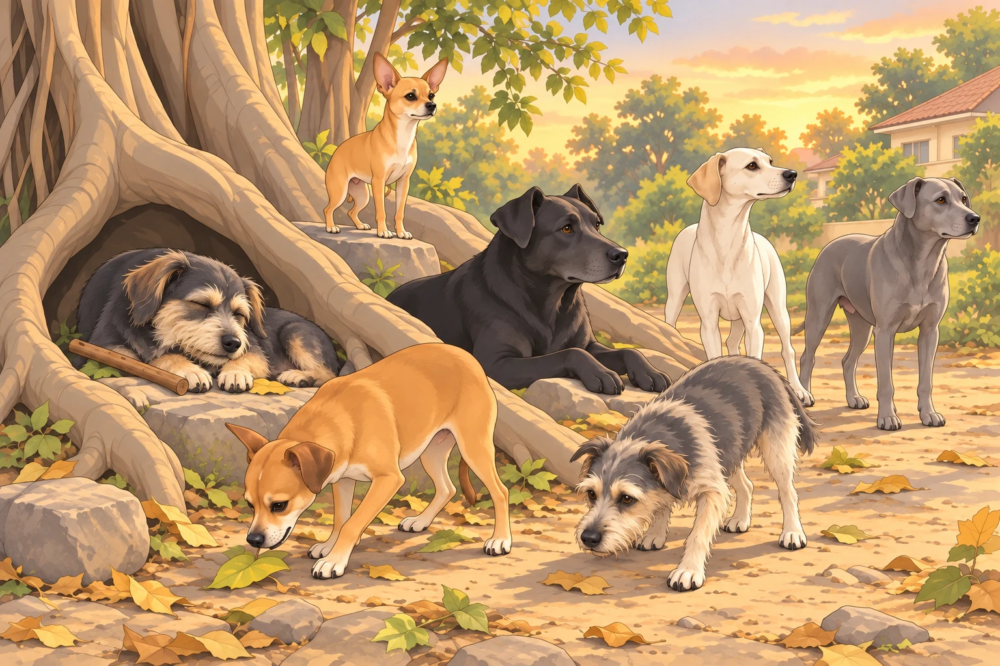
A cry came from the market.
Neet was on his feet before the others had raised their heads. Buddy looked at the hollow. He had only just fitted it.
“It’s coming from the market,” Shadow said, his ears swiveling toward the sound. Neet planted himself at the edge of his command post and barked sharply.
“Alright, team, this is it! Time to show the neighborhood what we’re made of. Let’s move out!”
Buddy put his stick between two roots. He intended to return before anything discovered how comfortable his evening was.
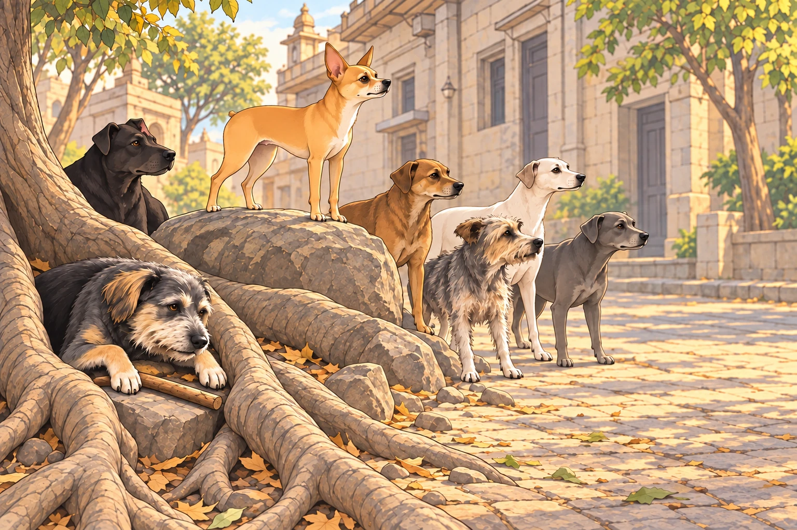
The gang raced through the streets, led by Neet, his fine legs pumping furiously. Buddy followed, avoiding the loose stones Neet ran straight over. The scrappy terrier overtook him, sniffed a promising doorway and had to hurry to catch up again.
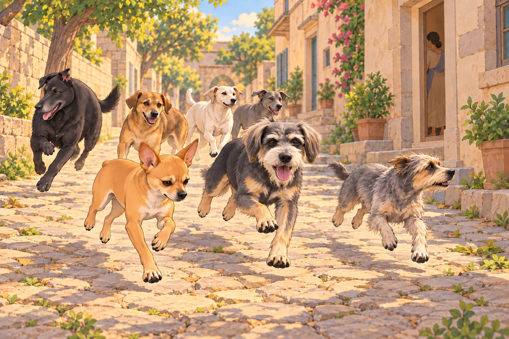
The bustling market came into view. A cart filled with fresh produce had overturned, and vendors were shouting as a pack of wild monkeys raided their goods. Tomatoes rolled between feet. Mangoes thumped into the dust. Above the commotion, one particularly bold monkey dangled from a signpost, holding a bunch of bananas like a trophy.
Heather, who had been shopping nearby, spotted the gang.
“Oh no, not the monkeys again,” she muttered, recognizing the chaos-makers from their rooftop invasion.
She set her shopping bag behind a stall and moved a fallen basket out of the narrow passage. One vendor was trying to lift the cart alone; she called another over to help. Buddy saw her, then the older woman sitting on an overturned crate beside the spilled tomatoes. The woman had both hands over her face.
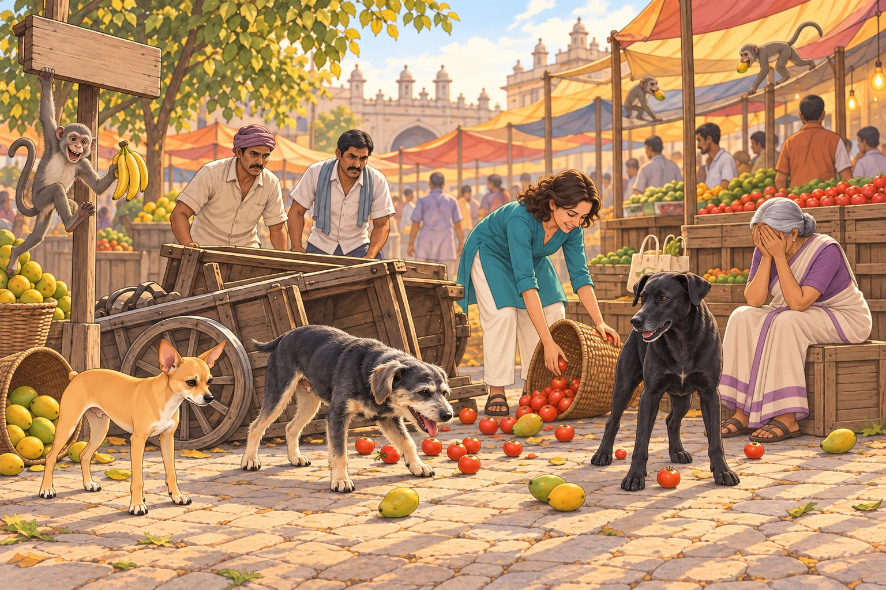
Neet skidded to a halt. He looked from the gang to the signpost, his ears pitched forward.
“This is our neighborhood,” he barked. “And we’re not letting these troublemakers ruin it. Let’s go!”
With a high-pitched yap, he charged straight for the banana-wielding monkey. The monkey shrieked and leapt to another post. Neet raced underneath it, jumping and barking until it dropped its loot and fled along the awning.
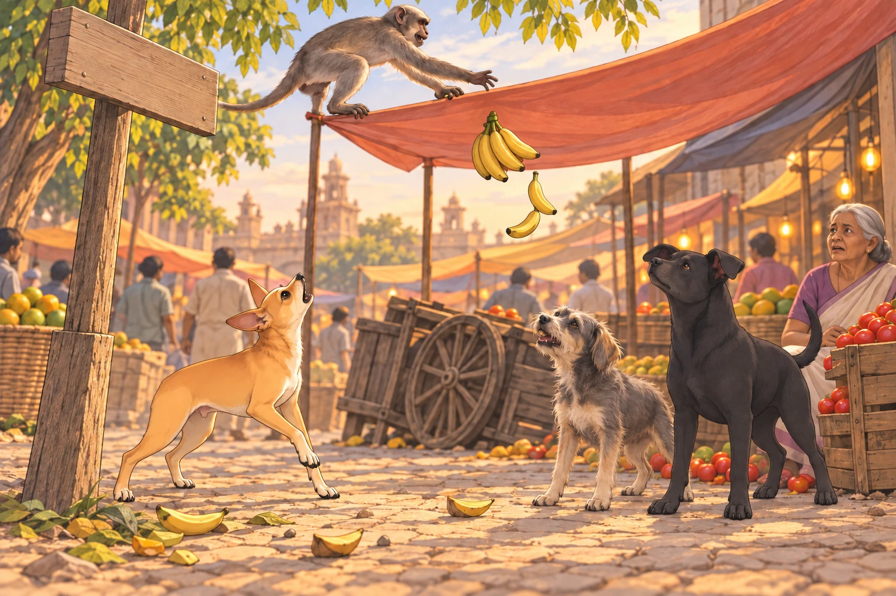
Neet planted himself beside the fallen bananas. He looked up at the empty post, waiting for a surrender that was no longer in the neighborhood.
“Neet!” Heather called. “The bananas are safe!”
He gave the post one final bark. Now they were.
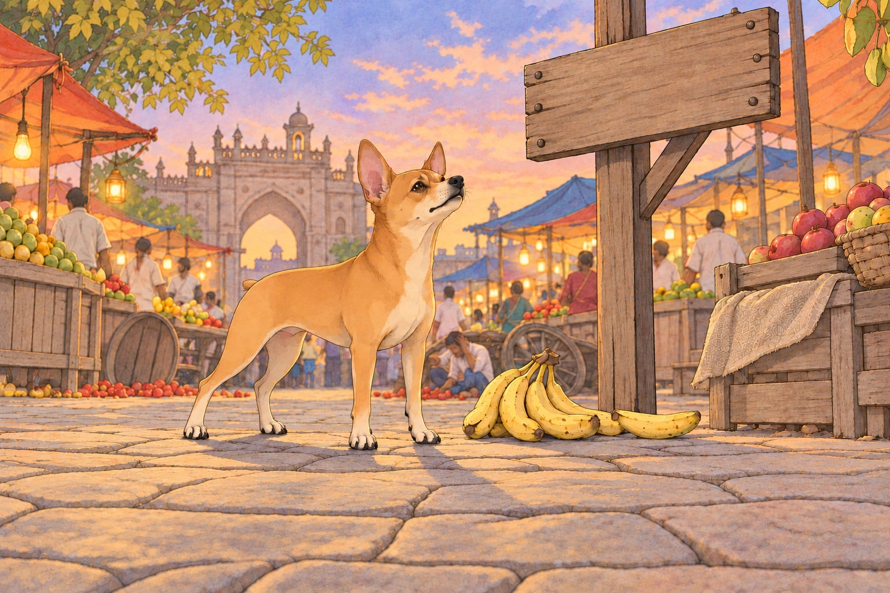
Behind him, Shadow and Chikki cornered two smaller monkeys at a basket of mangoes. Shadow growled low and steady. Chikki darted around the basket, snapping at their heels until they scampered up a nearby tree.
Neet turned toward the branches.
“Stay up there!”
Both monkeys chattered at him. He stepped closer to explain the order more loudly.
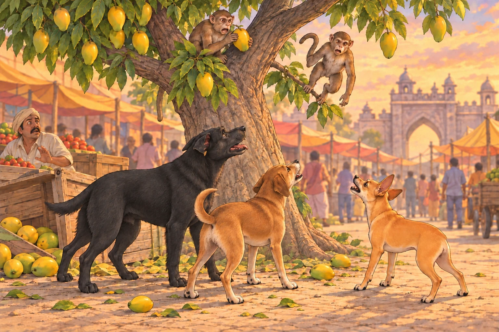
Another monkey dropped from the far side of the awning and reached for the bananas.
The scrappy terrier barked. Neet spun around and rushed back, sending the thief scrambling upward empty-handed. When he looked toward the mango basket again, one of its former occupants was already climbing down.
“They’re coming back,” Shadow said.
“Then we’ll chase them again!”
Chikki looked from the tree to the basket. “And who stays with this?”
Neet stopped halfway between two victories. Neither appeared capable of remaining won without him.
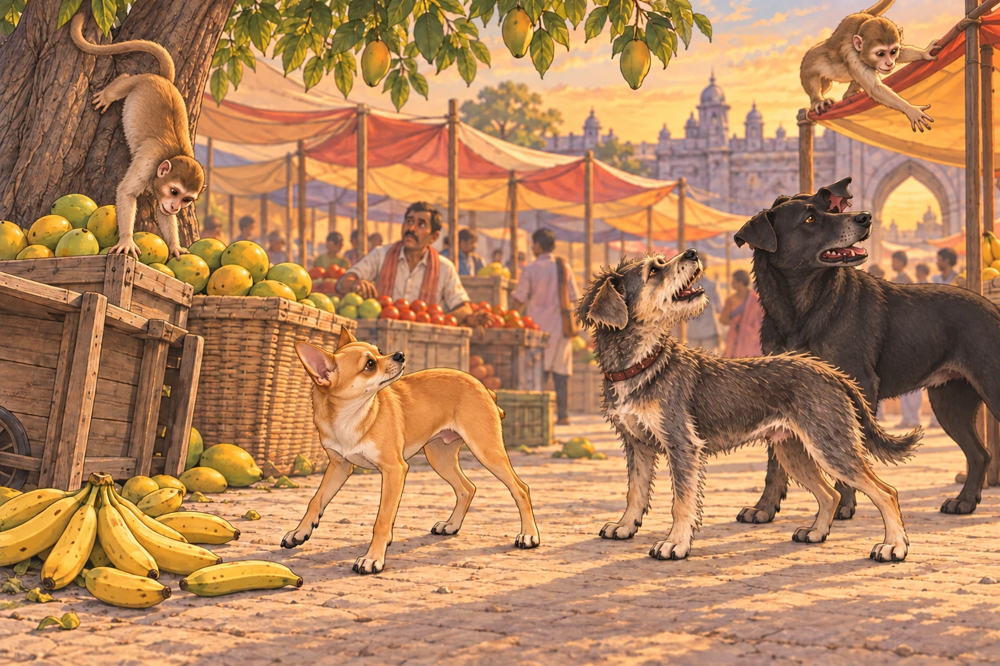
Meanwhile, Buddy had started after Chikki, then stopped beside the tomato seller. The others could reach the monkeys; she was sitting alone. He pressed his nose beneath her hand and stayed.
She lowered her hands, surprised, then smiled through her tears and patted his head.
“Good boy,” she said softly.
A tomato rolled past his paw. Buddy instinctively stopped it with his nose. He looked at the dozens scattered across the stones, nudged that one toward her crate and returned to her hand.
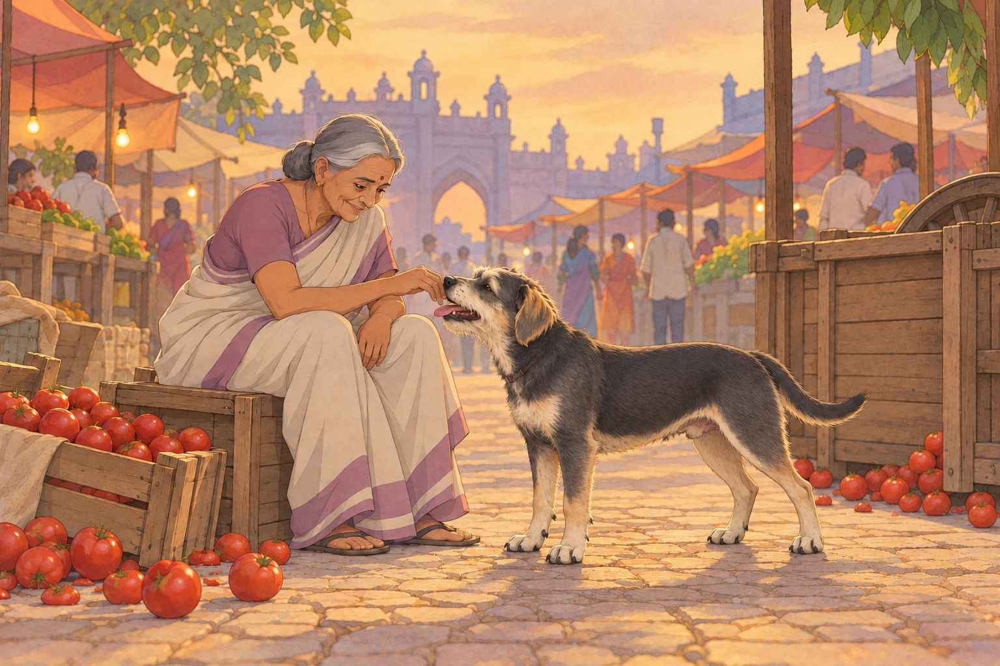
The woman bent to pick it up. Buddy felt immensely useful. There were more tomatoes. He could do more usefulness before she finished the first one.
He nosed a second one toward her. It struck the first and sent both rolling away. Buddy hurried after them, caught one with a paw and pushed the other harder than he intended. It went under the overturned cart.
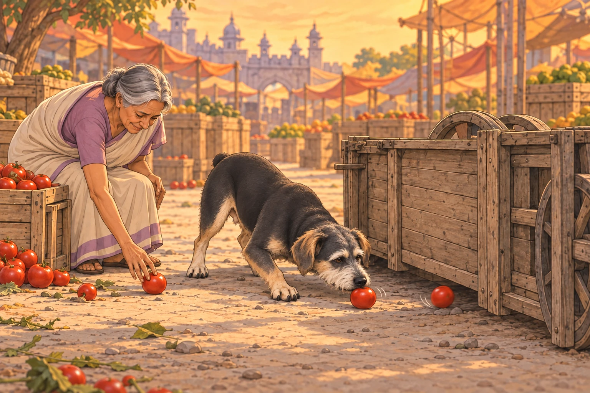
He crouched. The tomato was visible between a wheel and the ground. So was another tomato, which looked much easier to reach.
Buddy stretched his nose forward. Both rolled farther in.
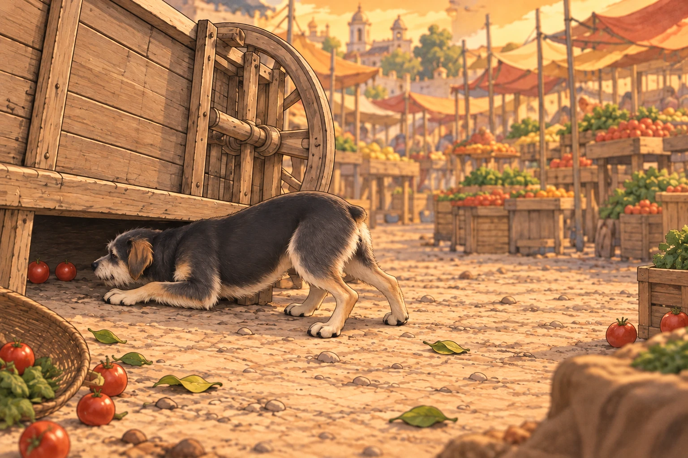
From behind him came a sharp monkey screech. Buddy jerked backward and bumped his head on the cart's edge. He froze halfway out. At the stall, a small monkey was reaching toward the tomato seller's remaining basket. The woman pulled it closer, but her smile had vanished.
Heather was beside the cart now. She held up a hand to the men preparing to lift it.
“Wait. Buddy's underneath.”
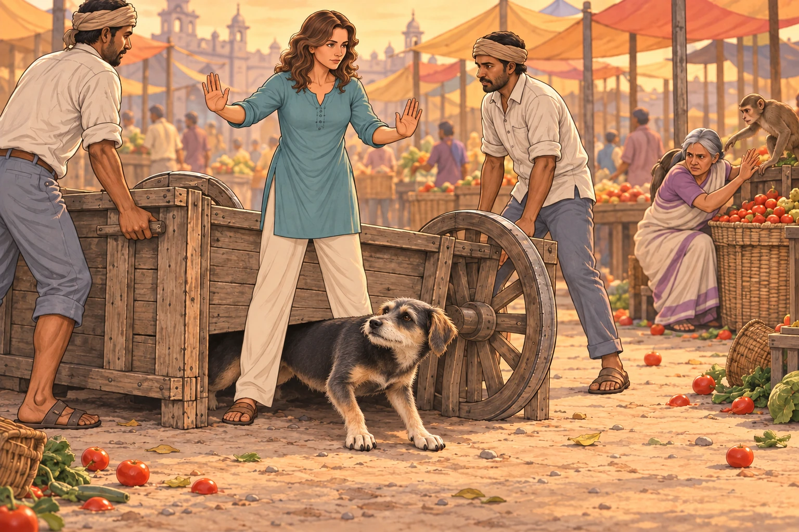
He emerged and pressed against her shin. She checked his head with a gentle hand, then looked at the runaway tomatoes.
“You can leave the shopping to us, sweetheart.”
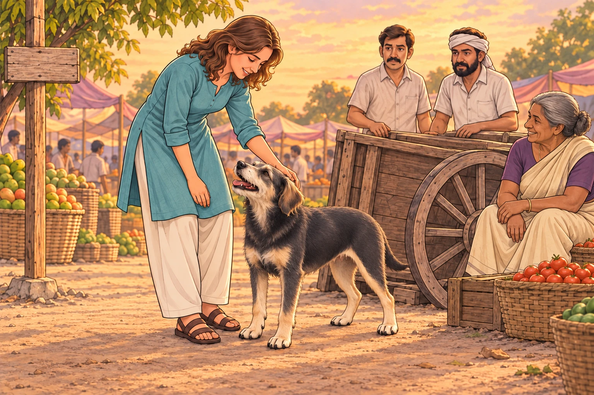
Buddy hurried back to the woman. He had rescued no tomatoes and left the person he was helping alone.
Buddy sat by the woman's crate. His nose wanted to pursue another rolling tomato. He kept it beside her hand instead.
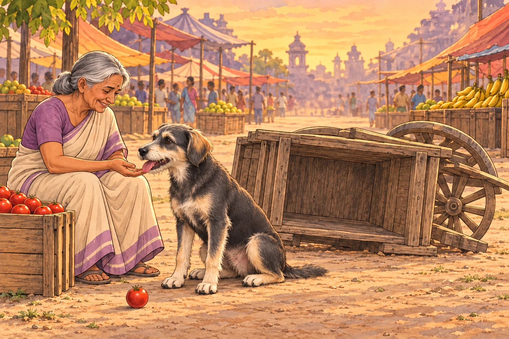
Across the passage, Neet sprang toward the mango thief. Shadow blocked the monkey's landing, and Chikki barked it back up the tree. The bananas lay unattended again.
“Neet,” Buddy called, “they wait till you go.”
Neet glanced toward his recovered bunch. A hand appeared over the awning's edge, then withdrew when the terrier barked.
He looked back at Buddy. Buddy hadn't moved. The little monkey near the tomato basket edged closer; Buddy stood and gave one deep bark. It retreated onto the stall roof.
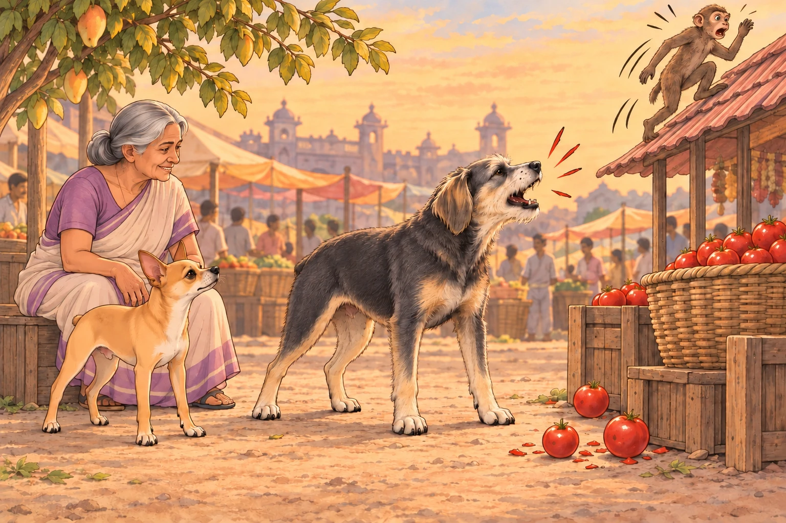
“Like that,” Buddy said, sitting down again.
Neet studied the two baskets, the overturned cart and the spaces between them. Then he climbed onto the cart's low wooden edge, with all four paws on the solid frame. He pointed his muzzle toward the mangoes.
“Shadow, Chikki, hold there. Terrier, bananas. Everyone else, watch the gaps. Nobody follows them up anything!”
Chikki sat beside her basket. “An order I can finish.”
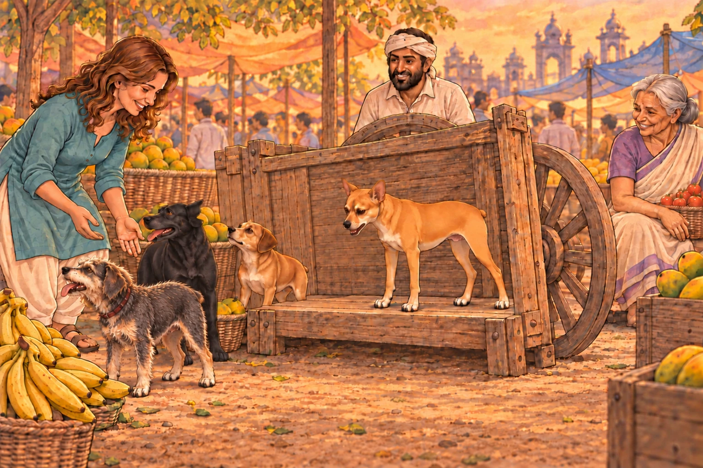
Neet gave the roofs a fierce little yap, then looked along his line of dogs. Shadow stayed at the mango stall. The terrier stood astride the banana bunch until Heather lifted it out from between his paws. He looked offended by this removal of his position.
“You can guard the empty bit,” she told him.
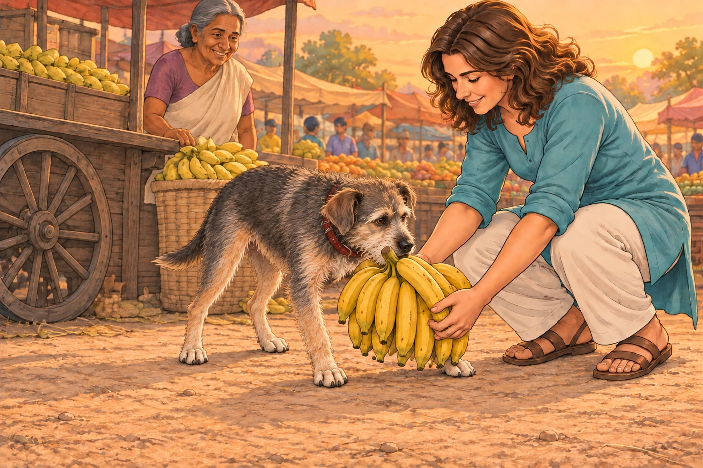
Neet stepped down from the cart to hold the open passage. From there he could see the roofs and all his scattered positions, although it would have been convenient if everyone had stood closer to his ears.
Buddy remained beside the tomato seller. Heather turned her basket upright and set it close enough for the woman to reach. Then she crouched and began gathering the scattered produce with her. Their hands moved steadily between the stones and the basket.
The men raised the cart. Tomatoes rolled out from underneath it. Buddy leaned forward.
Heather intercepted them with the empty fallen basket. Buddy sat back, relieved. Humans had considerably better equipment for this.
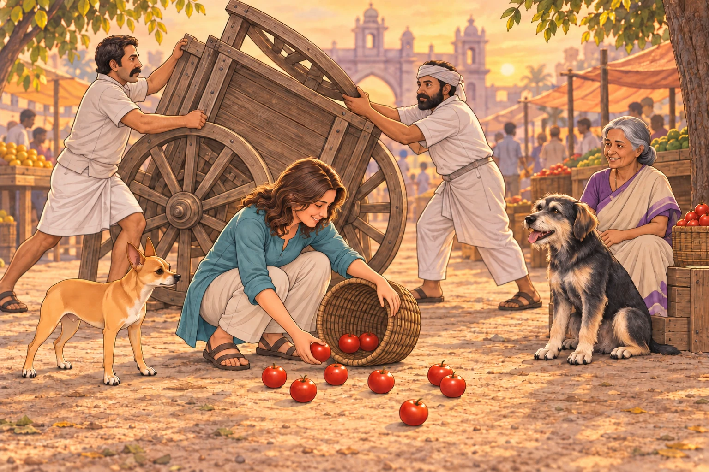
With the dogs holding the ground, the vendors could carry their goods behind the stalls. A monkey climbed down toward the mangoes. Shadow took one step forward. Chikki darted across its path, and it scrambled back to the tree. This time neither dog followed.
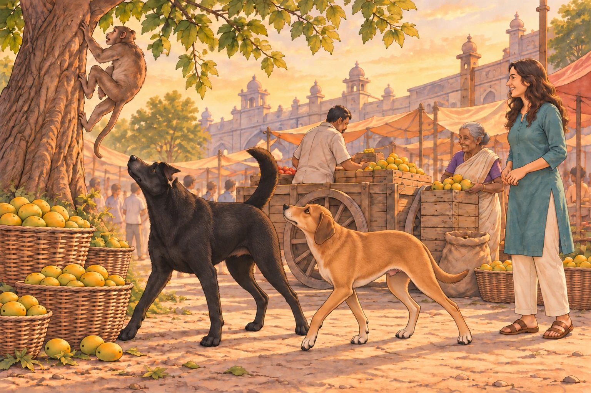
Another monkey dropped into the passage, hoping for the tomatoes. Buddy's stomach tightened. He wanted to join Heather behind the basket. The woman beside him was reaching for one last tomato, and the monkey was watching her hand.
Buddy stayed in front of the crate and barked.
Neet ran from the passage to his side. The monkey looked at Buddy, then at the smaller dog arranging himself as if there were several more of him.
“No shopping,” Neet told it.
Heather stood, holding the recovered basket against her hip. Behind her, the tomato seller drew her remaining goods beneath the stall. The monkey found two dogs, two watchful humans and nothing it could easily grab.
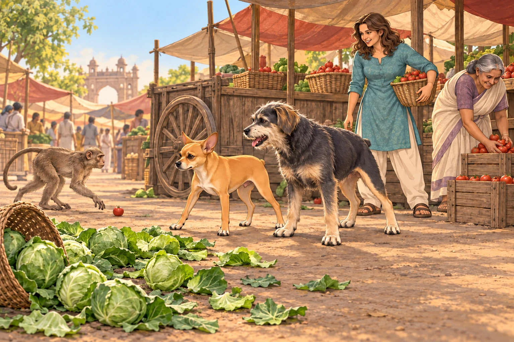
It sprang onto the awning and away.
Neet took a step after it. Buddy stayed put.
Neet stayed too. He added one bark, to make the decision sound more aggressive.
The remaining monkeys abandoned their stolen goods and fled into the night. The vendors cheered. Shadow let out a satisfied huff, and Chikki finally moved away from her mangoes.
Buddy checked the woman. She was standing now, her basket back on the stall. She stroked his head, and he leaned hard enough against her knee that she laughed.
One tomato was missing. He could see a monkey carrying it over the far roof. He watched it go, then returned to the hand he had actually helped.
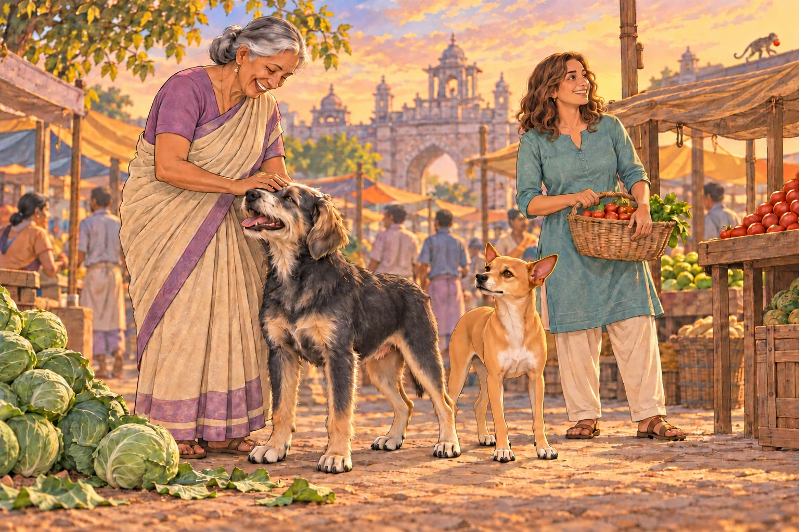
Heather knelt beside Neet, who had climbed triumphantly onto a low pile of cabbages beside the restored cart.
“Neet, you did it!” she said, laughing as she scratched behind his ears. “All of you.”
Neet puffed out his chest. One cabbage shifted beneath a hind paw.
He stepped down before anyone could reinterpret the ceremony.
A vendor approached with a basket of biscuits and scraps of meat.
“For the heroes of the market.”
The gang eagerly gathered around.
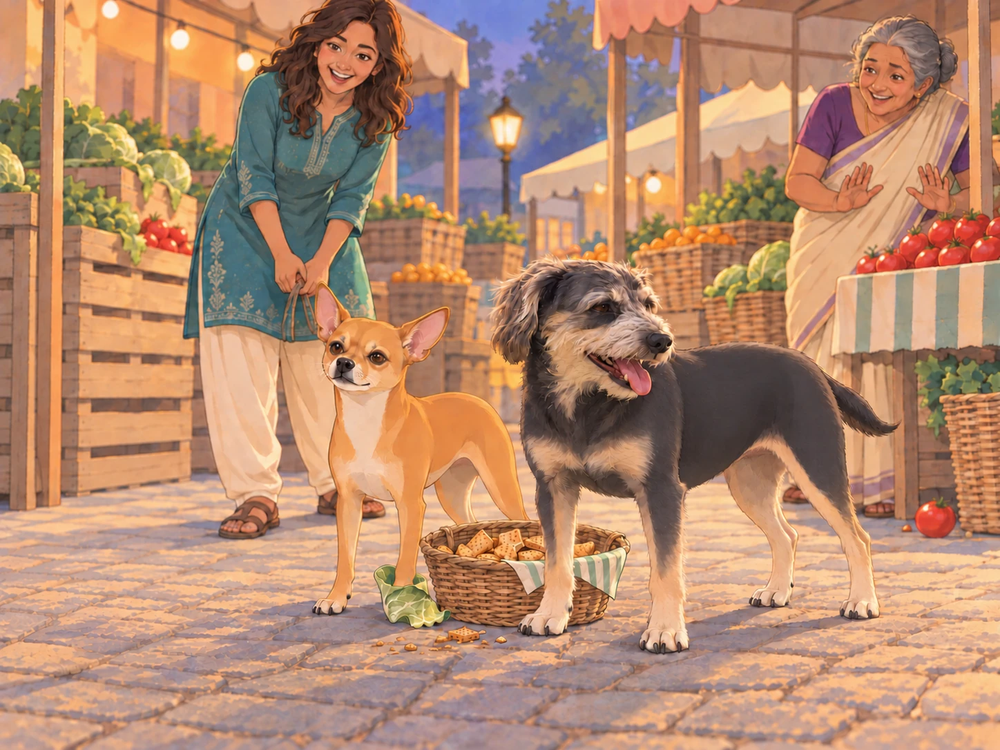
The terrier arrived first, having completed his defense of the empty bit. Shadow made room for Chikki. Buddy found a biscuit near the basket's edge and lay down beside it, with the tomato seller still within reach.
“You've got cabbage on your foot,” Shadow told Neet between bites.
“It's all about strategy,” Neet replied, his voice dripping with mock seriousness. “And a little bit of flair.”
Buddy looked from the leaf to the basket. “Does the flair come off before we go home?”
Neet took a dignified step. The cabbage came with him.
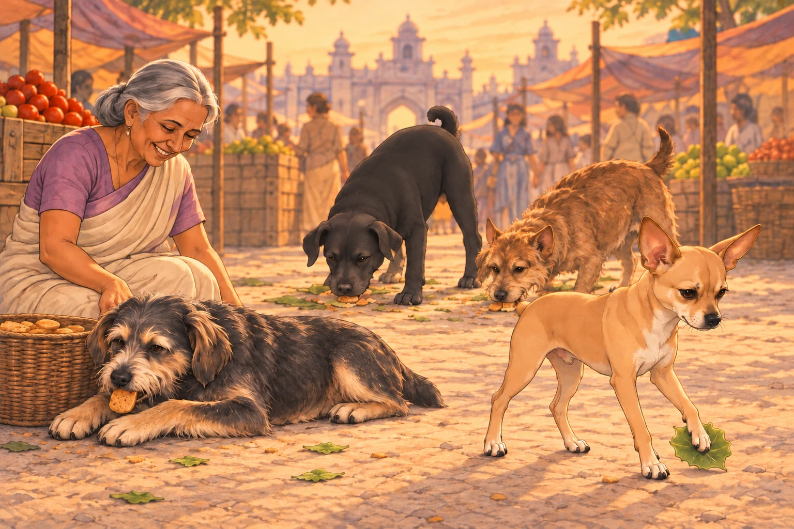
The tomato seller reached down once more to rub Buddy's head. He left his biscuit long enough to lean against her knee. Then he went back to it. Helping had taken much longer than a quiet evening, but this was an excellent way to be delayed.
Heather retrieved her shopping bag. The vendors were setting their stalls straight, calling across the passage and laughing as they discovered where various vegetables had landed. She thanked the woman for the head rub Buddy was still trying to prolong, then checked each dog before they left.
“Come on, ragamuffins. The market can close without you.”
Neet inspected the roofs once more. They seemed prepared to cooperate.
Back at the banyan tree, he climbed onto his command post.
“Excellent work, everyone. Tonight, we've proven once again why this neighborhood belongs to us. Let's keep it that way.”
The gang barked in agreement. Buddy returned to his hollow long enough to collect his stick. The stone he'd moved was still outside it. His evening was exactly where he'd left it, except that he was now too full to fit quite as neatly.
Heather smiled as the local dogs dispersed to their usual haunts.
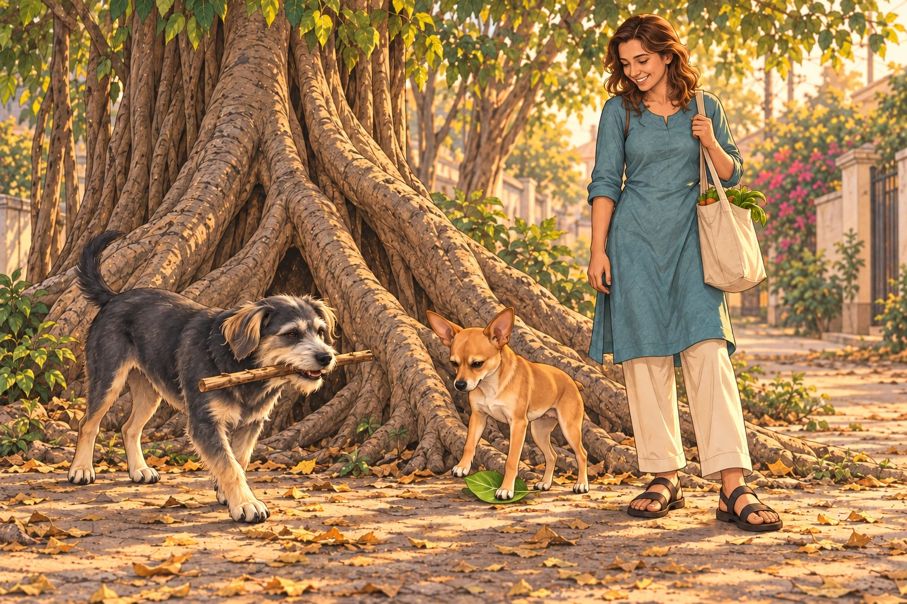
Neet waited for Buddy, still wearing the cabbage leaf, then walked home beside him.
“Leave the vegetable outside,” Heather said at the door.
Buddy carried his stick straight in. Neet looked down at his foot. The market had surrendered more easily.
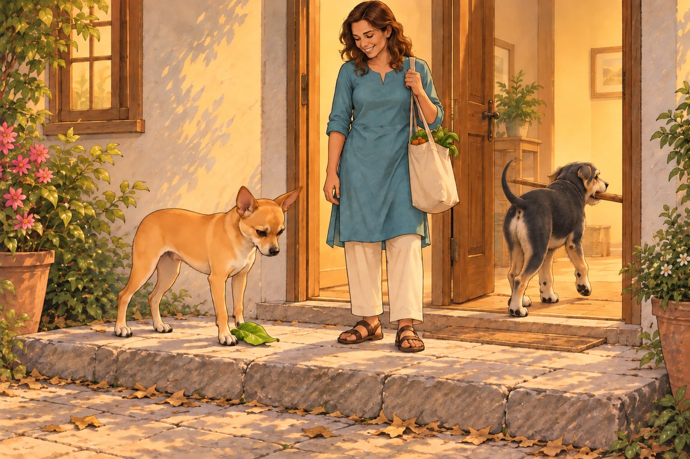
THE END